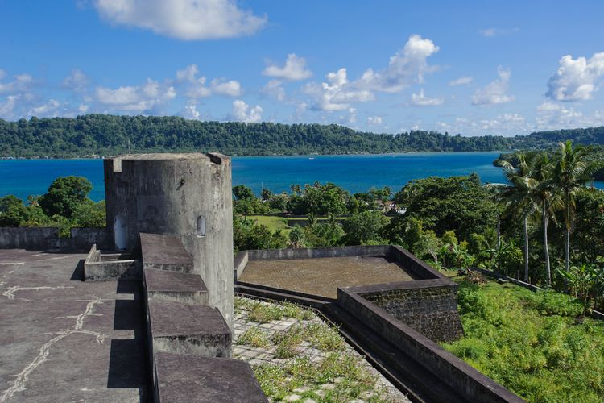
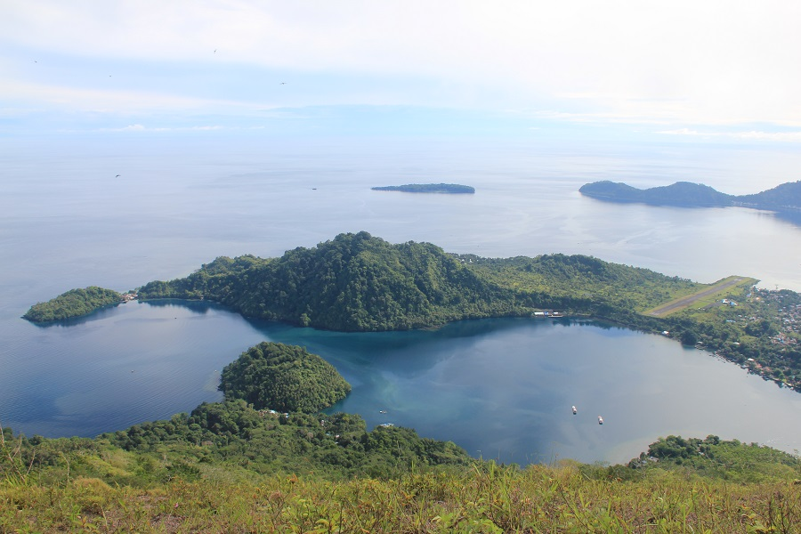
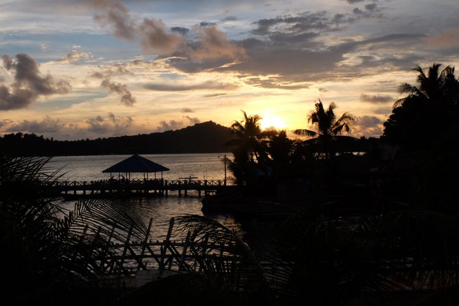
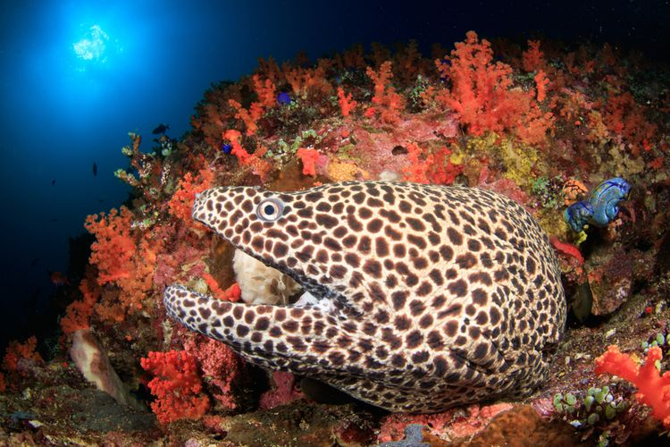
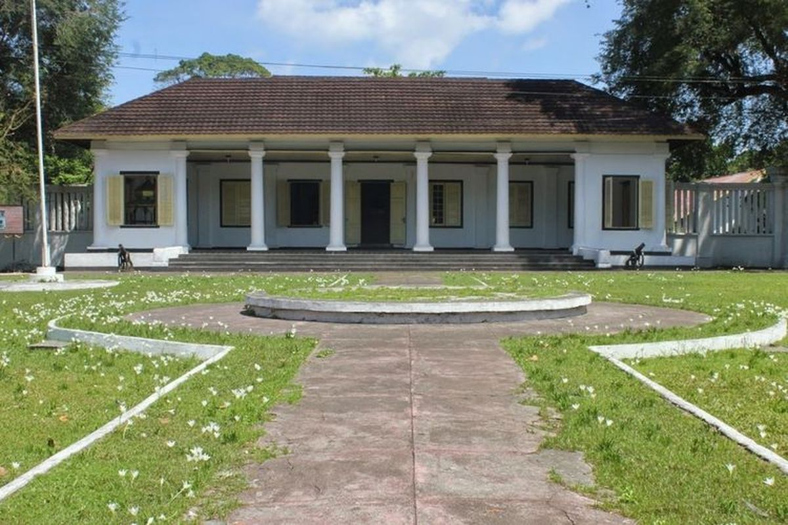
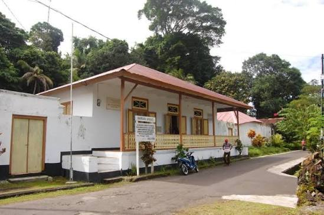
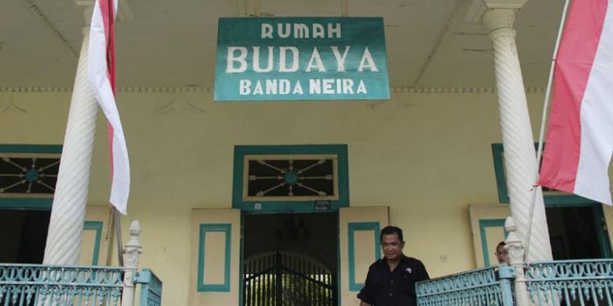

Temukan pesona sejarah dan keindahan alam di Banda Neira, Maluku.
Banda Neira merupakan salah satu destinasi wisata yang berada di Banda, Kabupaten Maluku Tengah, Provinsi Maluku. Destinasi ini dikenal karena perpaduan antara keindahan alam, kekayaan sejarah, dan budaya masyarakatnya. Di Banda Neira, wisatawan dapat menikmati pemandangan laut yang jernih, gugusan pulau yang indah, serta Gunung Api Banda yang menjadi salah satu daya tarik alamnya. Selain wisata alam dan bahari, Banda Neira juga memiliki berbagai peninggalan sejarah seperti Benteng Belgica, Benteng Nassau, serta rumah pengasingan tokoh nasional seperti Bung Hatta dan Sutan Sjahrir. Keberagaman daya tarik tersebut menjadikan Banda Neira sebagai destinasi yang cocok bagi wisatawan yang ingin menikmati keindahan alam sekaligus mengenal sejarah Indonesia.
Beberapa gambar dari Banda Neira:







Beberapa aktivitas yang dapat dilakukan di Banda Neira:
| Informasi | Keterangan |
|---|---|
| Nama Destinasi | Banda Neira |
| Lokasi | Maluku Tengah, Maluku |
| Jenis Wisata | Wisata Sejarah, Wisata Alam, dan Wisata Bahari |
| Aktivitas | Wisata sejarah, pendakian, snorkeling, dan menjelajahi pulau. |
| Daya Tarik | Benteng Belgica, Gunung Api Banda, Pulau Hatta, Lava Flow, Istana Mini Neira, Rumah Pengasingan Bung Hatta, dan Rumah Budaya Banda Neira |
| Waktu Kunjungan | Sepanjang Tahun |